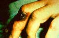

ÞARBON : ANTHRAX BASÝLÝ

Anthrax nerede bulunur?
Anthrax basili daha çok tarým ve hayvancýlýkla uðraþan bölgelerde görülür. Bu nedenle güney - orta Amerika, Asya, Afrika ve Karayib’ lerde diðer bölgelere oranla daha fazla Anthrax basili bulunur. Anthrax insanlara hasta hayvana temas sonucu deri yolu ya da hayvanýn yan ürünlerini yiyen insanlara sindirim yolu ile bir diðer bulaþma yolu olan toprakta saklý duran basillerin atmosfere karýþmasý sonucu solunum yolu ile bulaþabilir. Hastalýklý ölmüþ hayvanlar ya da yan ürünleriyle temas halinde bulunan insanlar Anthrax için risk grubunu oluþtururlar.
Anthrax nasýl bulaþýr?
Anthrax enfeksiyonu hava yolu, deri yolu ya da sindirim baðýrsak sistemi yolu ile insanlara bulaþabilir. Basillus Anthracis mikroorganizmasý toprak altýnda yýllarca saklý durabilir. Bu mikroorganizma yine deri temasý ya da hava yolu ile insanlara bulaþmasý mümkündür. Anthrax ayrýca enfekte olmuþ hayvanlarýn ürünlerinin az piþmesi ile de insanlara sindirim yolundan bulaþmýþ olur.
Anthrax belirtileri nelerdir?
Hastalýðýn belirtileri bulaþma þekillerine göre deðiþiklikler gösterir. Belirtiler ortalama 7 gün içinde ortaya çýkar.
Deri yolu ile bulaþma.
Derideki bir çatlak ya da yara izine deðen kontamine olmuþ ürünler kiþiyi hasta yapmaya yeter. Ýlk dönemlerde deri enfeksiyonu hatta daha çok böcek ýsýrýðý görünümünde kaþýntý ile baþlayan bu kýzarýklýklar zamanla kistleþip acýsýz ülser yaralarýna benziyorlar. 1-3 santim çapýnda ve ortasýnda karekteristik bir siyah nokta (nekrotik bölge) bulunuyor. Tedavi edilmeyen vakalarýn %20’si ölümle sonuçlanýyor. Antimikrobiyal tedavi ile ölümlerin önüne geçilebilir.
Solunum yolu ile bulaþma
Baþlangýçta belirtiler genel bir üþütme belirtisine benziyor fakat birkaç gün sonra belitiler aðýrlaþýp, solunum þoklarýna neden olabilir. Bir iki gün içinde solunum anthrax ‘ý ölümle sonuçlanabilir.
Mide baðýrsak sistemi ile bulaþma
Kontamine olmuþ etlerin yenilmesi sonucu mide baðýrsak sistemi mukozasýnda belirli bölgelerde ülserasyonlar oluþur. Bu ülserasyonlar mide kanamalarý, mide bulantýsý, iþtahsýzlýk, karýn aðrýsý, ateþ yüksekliði ve ishalle kendini gösterir. Vakalarýn %25 ile %60 ‘ ý ölümle sonuçlanýr.
Enfeksiyondan ne kadar sonra belirtiler ortaya çýkar.
Kuluçka dönemi ortalama 7 gündür.
Anthrax’ýn tedavisi :
Doktorlar tedavide etkili antibiyotikler kullanýrlar.
Anthrax ‘ýn bulaþmasýný önlemek için ne yapýlabilir?
Anthrax aþýsý yüksek risk grubuna uygulanabilir. Antrax ‘ý önlemek için anthrax olduðu düþünülen ölü hayvanlarýn dezenfeksiyonunun saðlanmasý gerekir. Kürk gibi hayvansal ürünleri iyi dezenfekte etmek ve tabiki hayvanlarý aþýlamak en etkili yöntemlerdendir. Ýyi piþmemiþ etleri yerken dikkatli davranmak gerekir. Þüpheli çiftlik hayvanlarýna ve hayvan ürünlerine temas etmemeye dikkat edilmelidir. Anthrax aþýsý %93 oranýnda deri anthrax ‘ýna karþý koruyuculuk gösterir.
Anthrax aþýsýnýn yan etkisi var mýdýr?
Diðer bütün aþýlar gibi anthrax aþýsý da uygulanan bölgede acý, aðrý, þiþme, kýzarma, lokal ateþ yüksekliði yapar fakat bunlar kýsa sürer. Fakat kabarýklýk birkaç hafta kadar sürebilir, sonra yine kaybolur. Aþý alaný dýþýnda %5 den %35 kadar iþtahsýzlýk, kas aðrýsý, ateþ görülebilir. Yine bu semptomlar birkaç hafta sonra kaybolur. Ciddi vakalarýn görülme olasýlýðý oldukça azdýr. Önceden anthrax geçirmiþ hastaya aþý yapýldýðýnda aðýr tablolar ortaya çýkabilir.
Herkes Anthrax aþýsý olmalý mýdýr?
Risk gurubu içinde bulunan kiþiler aþý olmalýdýr. Çiftlik bölgelerinde yaþayan insanlar aþý olabilirler. Hamile kadýnlar aþýlanmamalýdýr. Gerektiði zaman 18 ila 65 yaþ arasý kiþiler aþýlanabilir. Ciddi alerjik reaksiyonu olanlarda, 18 yaþýndan küçüklerde, baðýþýklýk sistemi rahatsýzlýðý olanlarda, MS hastalarý ve sinir sistemi hastalýðý geçirenlerde anthrax aþý uygulamasý sakýncalý olabilir.
Biyolojik silah olarak da kullanýlan þarbon basili anthrax geniþ kitlelere bu mikrobun bulaþmasýnýn kolaylýðý, üretim imkanlarý ve maliyetinin düþük olmasý nedeniyle fakir ülkelerin savaþ sýrasýnda tercihleri arasýnda yer alýyor. Dünya Saðlýk Örgütü’ne (WHO) göre tam 47 tane biyolojik ajan bulunuyor. Bunlardan bazýlarý:
Veba , Tifo , Brusella , Çiçek , Kore hummasý ,Kongo hummasý , Rift vadisi hummasý , Japon mankafa hastalýðý, Grip virüsleri
Kaynaklar
WHO Dünya Saðlýk Örgütü internet sitesi
Web MD saðlýk sitesi
Arnot Ogden internet saðlýk sitesi